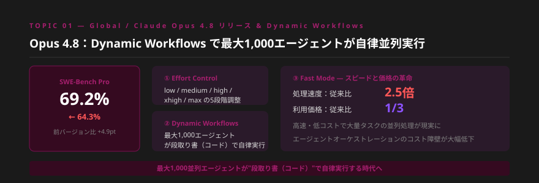
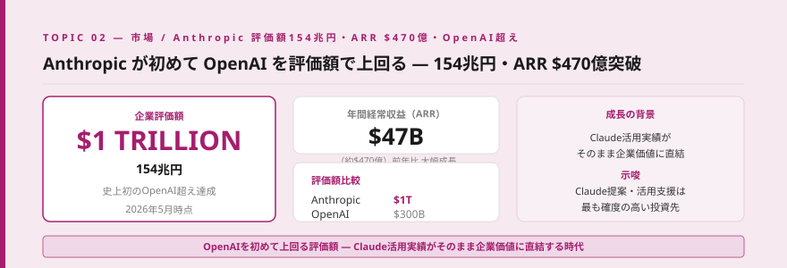
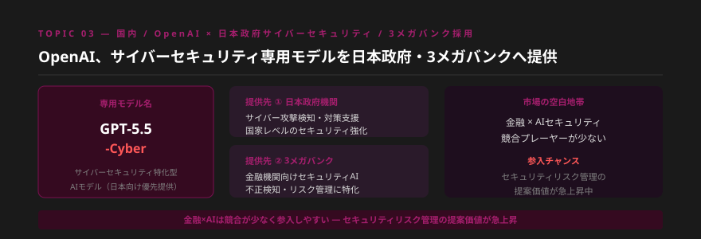
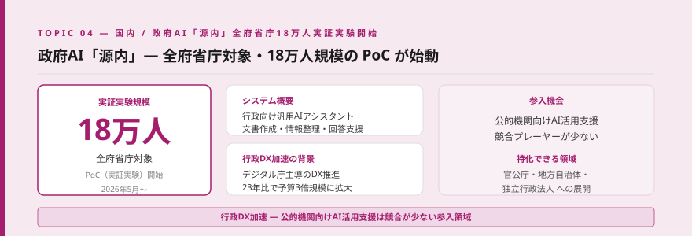
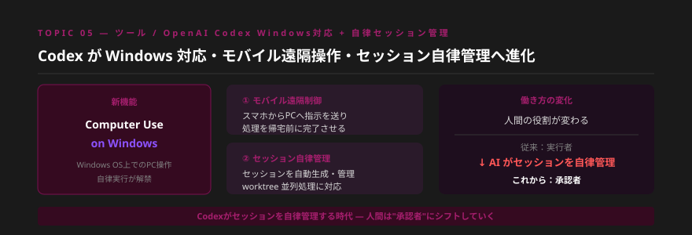
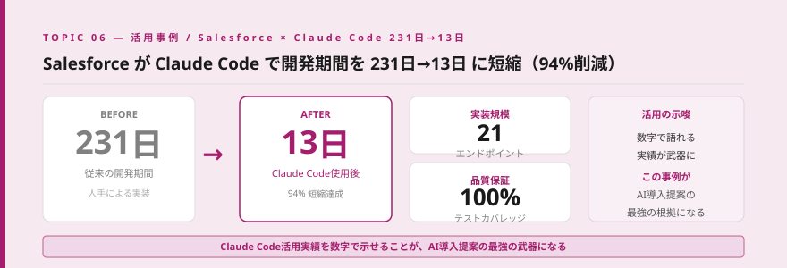
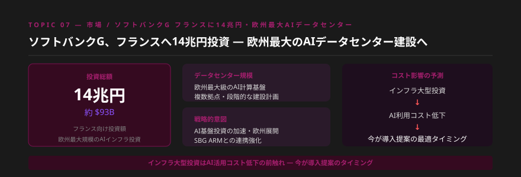
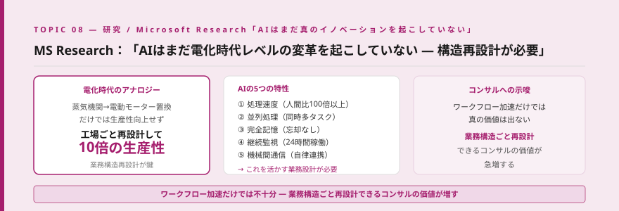
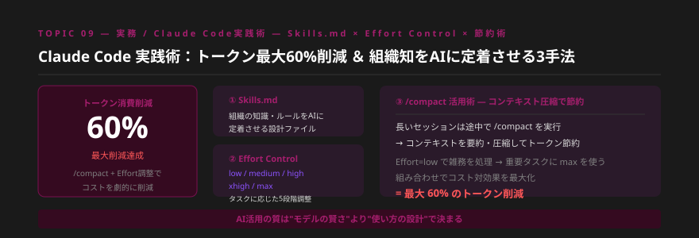
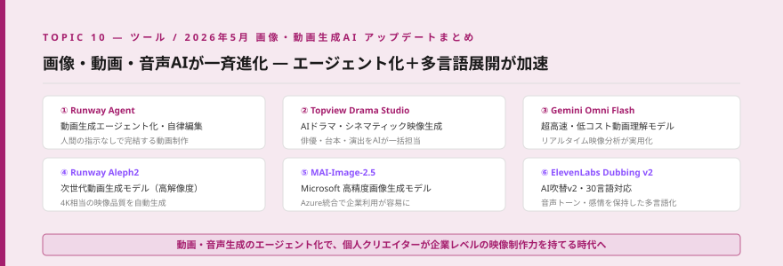

- Claude Opus 4.8リリース。Dynamic Workflowsで最大1,000エージェントが並列自律実行する時代が到来し、Salesforceは231日の作業を13日で完了させた。
- AnthropicがOpenAIを初めて評価額で上回り154兆円に。ARR$470億突破のニュースは「Claude活用が直接企業価値になる」時代を示している。
- OpenAIが日本政府・3メガバンクと連携、政府AI「源内」が18万人規模のPoC開始。国内のAI社会実装が一気に官民両面で加速している。
Topic 01 — Global Claude Opus 4.8 リリース & Dynamic Workflows ― 最大1,000エージェント並列自律実行

何が起きたか
Anthropicが新フラッグシップモデルClaude Opus 4.8をリリースした。コーディングベンチマーク「SWE-Bench Pro」のスコアが64.3%から69.2%に向上し、業界最高水準を更新した。最大の新機能は3点。①タスクの複雑さに応じた思考量を5段階（low / medium / high / xhigh / max）で調整できるEffort Control、②段取り書（コード）で最大1,000エージェントが同時に自律実行できるDynamic Workflows、③処理速度2.5倍・価格1/3を実現したFast Mode。特にDynamic Workflowsは、人間が1枚の指示書を書くだけで1,000体のエージェントが並列で実行を進めるという、エージェント活用の新たな地平を切り開くものだ。
噛み砕くと
これまで「AIに指示を出す→1つずつ処理→次のタスクへ」という逐次処理が当たり前でした。Opus 4.8のDynamic Workflowsは、まるで「段取り書」を渡すだけで1,000人のチームが動き出すようなイメージです。Effort Controlの登場で「簡単なタスクには安く・難しいタスクには時間とコストをかけて処理する」という使い分けも可能になりました。Fast Modeによりコストが1/3に下がれば、エージェント活用の費用対効果が一気に改善します。
「1,000エージェント並列実行」という数字は、クライアントへの提案でインパクトが非常に大きい。コーディング業務だけでなく、書類チェック・データ整理・競合分析など「量が多い単純繰り返し業務」への適用提案ができます。Effort Controlでコスト管理がより精密になった点は、ROI試算の精度向上にも直結します。今週のSalesforce事例（TOPIC 06）と合わせて語ることで、提案の説得力が格段に上がります。
明日から使える業務活用
- 自社またはクライアントの「量が多い繰り返し業務」をリストアップし、Dynamic Workflowsで並列化できるものを3つ特定する
- Effort Controlの5段階を実際に試し、タスクごとの最適なレベルを把握してコスト管理フローを作成する
- SWE-Bench Pro 69.2%という数字をClaudeの技術優位性として提案書・説明資料に追加する
Topic 02 — 市場 Anthropic 評価額154兆円・ARR $470億 ― 初めて OpenAI を上回る

何が起きたか
Anthropicが評価額$1兆（約154兆円）に達し、史上初めてOpenAI（約$3,000億）を企業評価額で上回った。年間経常収益（ARR）も$470億（$47B）を突破。Google・Amazonからの大型投資と、エンタープライズ市場でのClaude採用急拡大が主な要因だ。Claude APIの利用量はこの12ヶ月で5倍以上に拡大しており、特に金融・医療・法律分野での大型契約が増加している。
噛み砕くと
「OpenAI一強」と思われてきた生成AI市場で、AnthropicのClaudeが評価額でOpenAIを超えました。これはClaudeを活用している企業・個人の実績が、そのまま市場の評価として現れていることを示しています。「Claudeを使う・提案する」という選択が、世界で最も高く評価された企業の力を借りることと同義になった瞬間です。この事実はクライアントへの提案で「なぜClaudeか」を語る根拠として強力に機能します。
「OpenAIかClaudeか」という比較をされるクライアントへの返答が、今週から変わります。評価額でAnthropicがOpenAIを上回ったという事実は、単なる競争優位の話ではなく「Claude活用コンサルとしての信頼性の裏付け」になります。ARR $470億という数字は「世界中の企業がClaudeにお金を払っている」ことの証明でもあります。提案書の冒頭に「現在世界最高評価のAI企業が提供するモデル」という文脈を加えてみてください。
明日から使える業務活用
- 提案書・提案メールの「Anthropic・Claude紹介」セクションに評価額$1兆・ARR $470億という数字を追加する
- 「なぜClaudeか」を3行で説明できる定型文を作成し、クライアント説明の際の引き出しに加える
- Claude活用事例の収集を強化し、「世界最高評価企業のAIを使いこなせるコンサルタント」としてのポジショニングを強化する
Topic 03 — 国内 OpenAI × 日本政府サイバーセキュリティ ／ 3メガバンクへ GPT-5.5-Cyber 提供

何が起きたか
OpenAIがサイバーセキュリティに特化した専用モデル「GPT-5.5-Cyber」を開発し、日本政府機関および国内3メガバンク（三菱UFJ・三井住友・みずほ）への提供を開始した。内閣サイバーセキュリティセンター（NISC）との連携のもと、国家レベルのサイバー攻撃検知・対策支援を目的とする。金融機関向けには不正取引検知・リスク管理の高度化が主な用途で、従来の人手ベースの監視と比べて検知精度が従来比3〜4倍に向上すると報告されている。
噛み砕くと
AIが「セキュリティの専門家」として政府や大手金融機関に採用された出来事です。これまでセキュリティ対策は高コストで専門人材が必要でした。AI専用モデルが登場したことで、中堅・中小の金融機関や公的機関でもセキュリティレベルを一気に引き上げられる可能性が生まれました。同時に「AIを活用したセキュリティ対策コンサル」という新たなサービス領域が急速に立ち上がっています。
金融×AIセキュリティは競合プレーヤーが少なく、かつクライアントの支払い意欲が高い領域です。3メガバンクという大型事例が登場したことで、地方銀行・信用金庫・保険会社への「同様の導入をサポートする提案」が通りやすくなりました。「大手銀行が採用したAIセキュリティ」という事実を引用することで、稟議通過のハードルが一気に下がります。まずは「AIを活用したセキュリティリスク管理入門資料」を1枚作ることから始めてみてください。
明日から使える業務活用
- 金融機関・公的機関クライアントへの提案に「AI活用によるサイバーセキュリティ強化」の項目を追加する
- 3メガバンク採用事例を引用した「AIセキュリティ対策入門資料」を1枚作成し、訴求材料として準備する
- 地方銀行・信用金庫・保険会社のリストを作成し、優先的にアプローチすべきターゲットを絞り込む
Topic 04 — 国内 政府AI「源内」― 全府省庁18万人規模の PoC 開始

何が起きたか
デジタル庁が主導する行政向け汎用AIアシスタント「源内（Gen-Nai）」の全府省庁展開PoC（実証実験）が2026年5月より正式に開始された。対象は日本の全府省庁に属する職員約18万人。文書作成支援・情報整理・Q&A応答・データ分析などの業務効率化が主な活用場面で、2026年度中の本格導入を目指す。政府調達における日本語対応・セキュリティ基準をクリアしたモデルが選定されており、今後の調達基準のモデルケースとなる可能性が高い。
噛み砕くと
「政府がAIを全省庁で使い始めた」というニュースは、民間企業にとって大きなシグナルです。行政が動けば、地方自治体・独立行政法人・公益団体も追随します。「官公庁がAIを使っているのに、うちの会社は？」という問いが、民間企業のAI導入を後押しする材料になります。また、政府調達のAI選定基準は民間企業のセキュリティポリシー策定にも影響を与えます。
公的機関向けAI活用支援は競合コンサルタントが少なく、かつ案件の継続性が高いという特徴があります。地方自治体・独立行政法人・教育機関は「民間企業向けコンサル」の経験が通用しにくく、専門性を持ったコンサルへのニーズが高い領域です。「源内」のPoC結果が出始める2026年下半期が、地方への波及提案の最適タイミングになります。今からアプローチ先を検討しておきましょう。
明日から使える業務活用
- 地方自治体・教育機関・独立行政法人向けのAI活用提案書テンプレートを今から1本作成する
- 「政府AI源内のPoC開始」を引用し、「官公庁がすでに導入を進めている」という訴求材料をまとめる
- 自分のクライアントリストに公的機関が含まれているか確認し、優先度を見直す
Topic 05 — ツール OpenAI Codex Windows 対応 ＋ 自律セッション管理・モバイル遠隔制御

何が起きたか
OpenAI CodexがWindows OS対応を正式発表した。これにより「Computer Use on Windows」が可能となり、WindowsPC上でのアプリケーション操作・ファイル処理・ブラウザ操作などをCodexが自律実行できるようになった。同時に3つの新機能が追加された。①モバイル遠隔制御：スマートフォンのChatGPTアプリからデスクトップのCodexに新規タスクを指示し、外出先から処理を開始できる。②セッション自動生成：タスクに応じてCodexが必要なセッションを自律的に作成・管理する。③worktree並列処理：複数のタスクを独立した作業ツリーで同時進行させる機能。
噛み砕くと
AIが「PCを操作するアシスタント」から「PCで仕事を自律的に進めるパートナー」へと進化しています。モバイル遠隔制御が加わったことで、通勤中にスマホでCodexに指示を出し、会社に着いた時には作業が完了しているという働き方が現実になりました。特にWindowsへの対応は、日本企業の90%以上がWindowsを使っていることを考えると、実務への影響が非常に大きいです。
「Codexがセッションを自律管理する」という変化は、仕事の構造そのものを変えます。コンサルタントの提供価値が「作業の実行」から「タスクの設計・承認・品質管理」にシフトしていくことを意味します。これをクライアントへの提案に活かすなら「AI活用後の業務フロー再設計」サービスとして提案できます。「Codexが何を自律実行できて、何を人間が判断すべきか」を整理した資料は今すぐ価値があります。
明日から使える業務活用
- Codex Windows版をセットアップし、実際にモバイル遠隔制御を試してクライアント向けデモ動画を撮影する
- 「AIが自律実行するタスク」と「人間が承認・判断すべきタスク」を分けた業務フロー図を作成する
- worktree並列処理を活用した「複数プロジェクト同時進行」の活用事例を1つ作り、提案書に追加する
Topic 06 — 活用事例 Salesforce × Claude Code ― 開発期間 231日→13日（94%短縮）

何が起きたか
Salesforceのエンジニアリングチームがブログで衝撃的な事例を公開した。API統合・エンドポイント構築プロジェクトでClaude Codeを活用した結果、従来231日かかっていた開発作業を13日で完了（94%の期間短縮）。完成した21のAPIエンドポイントのテストカバレッジは100%を達成。品質を落とさずに圧倒的なスピードを実現した点が特に注目されている。Salesforceのシニアエンジニアは「Claude CodeはAPIドキュメントを理解し、テストケースを自動生成し、エッジケースも網羅した」と述べており、単純な作業自動化を超えた高度な活用事例として世界的に注目を集めている。
噛み砕くと
「231日かかる仕事が13日で終わる」ということは、単に「早くなった」のではなく、同じチームが18倍の量の仕事をこなせるようになったということです。これをビジネスに置き換えると、「現在のチーム規模のまま、18倍のプロジェクトを受けられる」可能性があります。テストカバレッジ100%という品質保証がついてくる点は、エンタープライズ向けの提案で特に説得力があります。
この事例の最大の価値は「数字が具体的であること」です。231日→13日・94%短縮・21エンドポイント・テストカバレッジ100%——これだけの数字があれば、どんなクライアントにも「AIを使うと何が変わるか」を3分で説明できます。自社・クライアントでの活用事例を同様の形式（Before/After・削減率・品質指標）で記録していくことが、最強の提案資料になります。今週から「活用事例テンプレート」を作り、数字を記録する習慣をつけましょう。
明日から使える業務活用
- Salesforce事例（231日→13日・94%短縮）を提案書の「AI活用実績事例」セクションに追加する
- 自社のClaude Code活用を「Before/After＋数値」形式で記録する活用事例ログを作成する
- クライアントの開発・文書作成業務で「同様の94%短縮が実現できる業務」を1つ特定して提案する
Topic 07 — 市場 ソフトバンクG フランスへ14兆円投資 ― 欧州最大 AI データセンター建設

何が起きたか
ソフトバンクグループ（SBG）がフランスへの総額14兆円（約$93B）に上るAIインフラ投資を発表した。欧州最大規模のAIデータセンターをフランス国内に複数建設する計画で、マクロン大統領との会談後に正式発表された。SBGが保有するARM社のチップ設計技術を核に、AI計算基盤の欧州展開を加速する。並行して米国でも$500Bの「Stargate」プロジェクトが進行中であり、世界全体でAI計算基盤への大規模投資が加速している。
噛み砕くと
AIを動かすには「膨大な計算処理ができるコンピュータ（データセンター）」が必要です。現在、世界中でこのインフラへの投資が急加速しています。インフラが整うと何が起きるか——AIの利用コストが下がります。電気の普及初期と同じように、インフラ投資が先行し、その後に利用コストが急落するパターンが繰り返されます。「今投資が起きている＝1〜2年後にAIコストが大幅に下がる」というシグナルを読み、今から提案を準備することが重要です。
SBGの14兆円投資というニュースは、クライアントへの「AI導入は今がタイミング」という訴求に活用できます。「大型インフラ投資→コスト低下→普及加速」のサイクルが始まっている今、AI導入を先送りしているクライアントは競合に遅れを取るという文脈で語れます。また「欧州展開」という側面は、グローバルビジネスを持つクライアントへの説明材料にもなります。
明日から使える業務活用
- SBG・Stargateなどの大型AIインフラ投資をまとめた「AI市場拡大の証拠一覧」資料を作成し、提案の説得材料にする
- 「1〜2年後のAIコスト低下シナリオ」を加えたROI試算書を作成し、今から導入する価値を数値化する
- グローバル展開を持つクライアントに「欧州でもAIインフラが整備される」という最新動向を共有する
Topic 08 — 研究 Microsoft Research「AI はまだ真のイノベーションを起こしていない」― 構造再設計の必要性

何が起きたか
Microsoft Researchが発表した論文「AI at Work: Promise and Peril」が注目を集めている。論文の主張は「AIはまだ電化時代のような真のイノベーションを起こしていない」というもの。電化時代のアナロジーとして「蒸気機関を電動モーターに置き換えるだけでは生産性は上がらなかった——工場ごと再設計して初めて10倍の生産性を得た」を引用。現在のAI活用は「既存ワークフローの加速」にとどまっており、AIが持つ5つの特性（①超高速処理 ②並列処理 ③完全記憶 ④継続監視 ⑤機械間通信）を活かす業務構造の根本的な再設計が必要だと論じている。
噛み砕くと
「既存の仕事をAIで速くする」だけでは不十分で、「仕事の構造そのものをAIに合わせて変える」ことが本当の価値につながるという研究です。たとえば「メールの返信をAIに書いてもらう（速くする）」ではなく、「問い合わせ受付→分類→回答→フォローアップを全て自動化した新しいフロー（構造を変える）」に設計し直す発想です。この発想の転換を支援できるコンサルタントは、単なる「AI導入支援」より格段に高い価値を持ちます。
この研究はAIコンサルタントとしてのポジショニングを大きく変えうる視点を提供しています。「ワークフローをAIで速くする」から「業務構造をAIで根本から再設計する」へのシフトを提案できるコンサルは、市場での差別化が明確になります。「業務構造再設計コンサル」という新サービスの検討材料として、このMSR論文のポイントを3枚スライドにまとめてみてください。クライアントへのWOW体験になります。
明日から使える業務活用
- 担当クライアントの業務フローを1つ選び、「速くする」ではなく「構造から再設計する」提案書を1枚作成する
- MSR論文の「AIの5つの特性（速度・並列・記憶・監視・機械間通信）」を自分の提案書に組み込む
- 「電化時代のアナロジー」を使ったAI変革の必要性説明スライドを作成し、提案プレゼンに追加する
Topic 09 — 実務 Claude Code 実践術 ― Skills.md × Effort Control × /compact でトークン最大60%削減

何が起きたか
Claude Code上級ユーザーコミュニティから、トークン消費を最大60%削減しながら品質を維持する3つの実践手法が広まっている。①Skills.md：組織固有のルール・ナレッジ・コーディング規約をMarkdownファイルとして定義し、毎回説明する手間を省きながらAIに「組織の知識」を定着させる仕組み。②Effort Control（Opus 4.8新機能）：雑務にはlow・通常業務にはmedium・複雑な分析にはhighやxhigh・最重要タスクにはmaxと使い分けることで、コストと品質のバランスを最適化。③/compact コマンド：長いセッションの途中でコンテキストを圧縮・要約することでトークン消費を抑制。3手法を組み合わせると最大60%のトークン削減が報告されている。
噛み砕くと
Claude Codeは「どれだけ賢く使うか」で費用対効果が大きく変わります。毎回同じ説明をClaudeに与えるのは非効率で高コスト。Skills.mdに組織の知識をまとめておけば、新しいプロジェクトでも即戦力として使えます。Effort ControlとCompact活用で「賢い節約」が可能になり、月のトークン費用を半分以下に抑えながら生産性を維持できます。
「AIは高い」という認識を持つクライアントへの返答がここにあります。Skills.md・Effort Control・/compactの3手法を知っているかどうかが、Claude Codeの費用対効果を2〜3倍変えるのです。これを「AI活用最適化コンサルティング」として体系化し、既存クライアントへの追加提案にできます。また、チームでのClaude Code活用を支援する際に「Skills.mdの整備支援」は具体的・即時価値のある作業として提供できます。
明日から使える業務活用
- 自分の業務用Skills.mdを今日中に作成する（よく使う指示・ルール・出力形式を記載）
- 現在使っているEfort Controlのレベルを見直し、タスク別に最適なレベルの対応表を作る
- 長いセッションを行う前に「/compact活用のタイミング」をルール化し、コスト削減を習慣にする
Topic 10 — ツール 2026年5月 画像・動画・音声生成 AI アップデートまとめ（6本）

何が起きたか
2026年5月、画像・動画・音声生成AI分野で重要なアップデートが一斉に発表された。
- ① Runway Agent：動画生成がエージェント化。スクリプトから演出・編集まで自律実行する機能がプレビュー公開。
- ② Topview Drama Studio：AIが俳優・台本・演出を一括担当する「AIドラマ生成」機能。シネマティック品質の映像をプロンプト1行で生成。
- ③ Gemini Omni Flash：Googleが超高速・低コストの動画理解モデルを公開。リアルタイムでの映像分析が実用化レベルに到達。
- ④ Runway Aleph2：次世代動画生成モデル。4K相当の解像度を持つ映像を自動生成。
- ⑤ MAI-Image-2.5：Microsoftの高精度画像生成モデル。Azure統合で企業向け利用が容易に。
- ⑥ ElevenLabs Dubbing v2：AI吹替の第2世代。30言語対応で、元音声のトーン・感情を保持したまま多言語化を実現。
噛み砕くと
今月だけで6つの重要アップデートが重なったことが示すのは、動画・音声生成AIが「特定の専門家だけが使うツール」から「誰もが使えるビジネスツール」へと移行している事実です。特に注目は「エージェント化（Runway Agent）」と「多言語展開（ElevenLabs v2）」の組み合わせです。指示を出すだけで映像が自動完成し、それを即座に30言語展開できる時代が到来しています。
動画・音声生成AIの進化は「コンテンツ制作コスト」を劇的に変えます。「動画制作に100万円・数週間かかっていた業務が、AIで数時間・数万円に」というコスト提案は、製造業・EC・教育など多くのクライアントに刺さります。ElevenLabs Dubbing v2の多言語展開機能は、海外展開を考えているクライアントへの「グローバルコンテンツ戦略」提案の起点にもなります。まずRunway AgentとElevenLabs v2を試して、自分のデモ動画を作ることから始めてみてください。
明日から使える業務活用
- Runway AgentまたはElevenLabs Dubbing v2を試し、クライアント向けの「AI動画制作Before/After」デモ素材を1本作成する
- クライアントの既存動画コンテンツにElevenLabs v2で多言語吹替を試し、「グローバル展開コスト試算」を提案に加える
- MAI-Image-2.5のAzure統合を確認し、Microsoft 365を使っているクライアントへの「AI画像生成活用」提案書を準備する
今週のまとめ ｜ コンサルタントとして今すぐ動くべきこと
今週のニュースに共通するテーマは「AIの活用が"実験段階"から"本格社会実装"へと一気に加速した」という点です。Salesforceの94%削減事例、政府18万人PoC、3メガバンク採用——これらはすべて「AIは使えるツールである」という証拠が積み重なっている週でした。
Anthropicの評価額がOpenAIを超えたという事実は、「Claudeを使いこなすコンサルタントの価値が世界最高水準のAI企業の成長と連動している」ことを示しています。Microsoft Researchの「業務構造再設計」の提言と、Salesforceの数字は、コンサルタントとして次に何を提案すべきかを明確に指し示しています。
今週から意識してほしいのは「数字で語る・構造から変える・コストを最適化する」という3つのキーワードです。これを実践できるコンサルタントが、2026年後半の市場で最も求められる存在になります。
| # | 今週すぐできるアクション | 期待効果 |
|---|---|---|
| 1 | Salesforce事例（231日→13日）を提案書に追加し「Claude Code活用事例ログ」を開始する | 数字による提案説得力の強化 |
| 2 | 自分のSkills.mdを作成し、Effort Control対応表を整備してトークン費用を最適化する | Claude Code運用コスト削減・品質向上 |
| 3 | Anthropic評価額$1兆・ARR $470億を「なぜClaudeか」説明の根拠として提案書に組み込む | Claude提案の信頼性向上・競合差別化 |
| 4 | 担当クライアントの業務を1つ選び「速くする」でなく「構造から再設計する」提案書を作成する | 高付加価値コンサルへのポジションシフト |
| 5 | 地方自治体・金融機関・公的機関向けアプローチリストを作成し、優先順位を設定する | 競合の少ない新規市場への先行参入 |